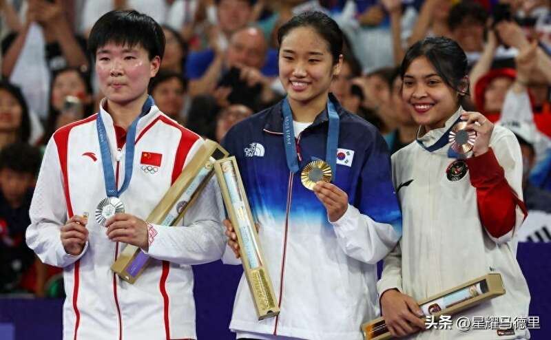
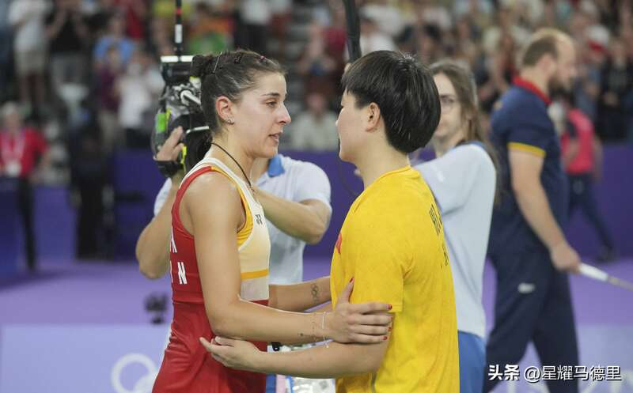
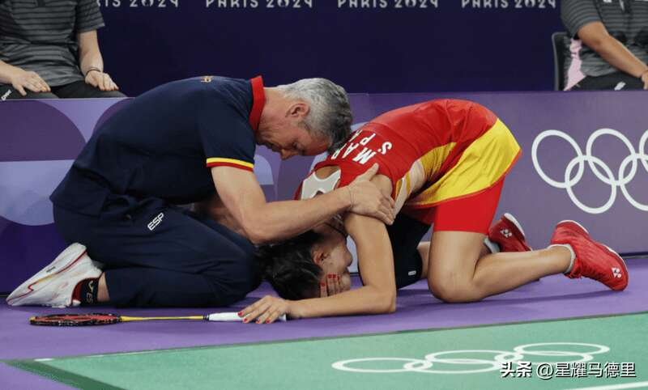
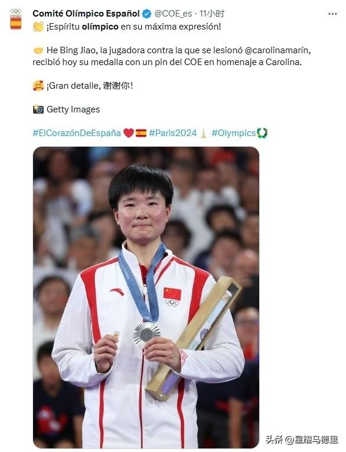
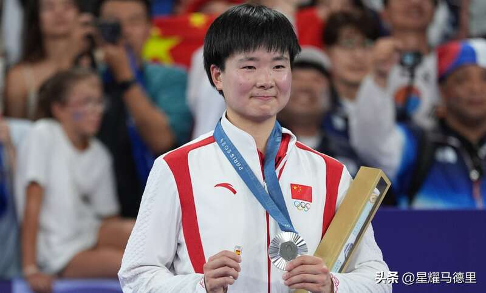
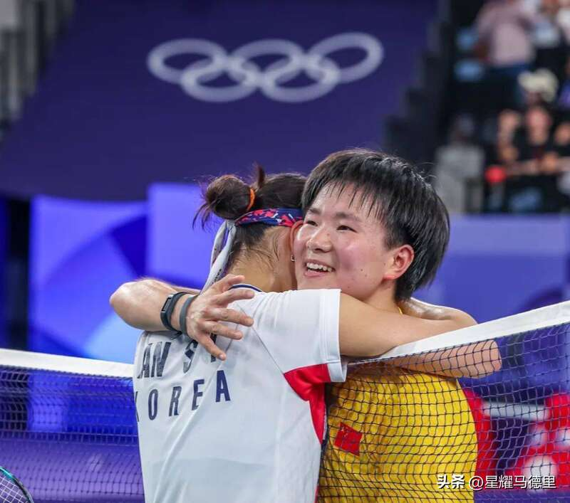
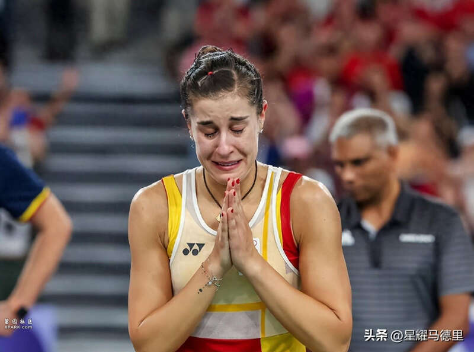
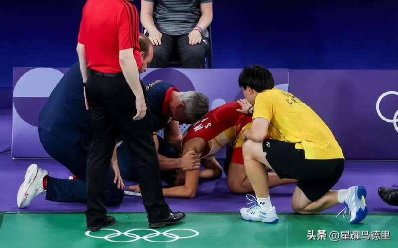
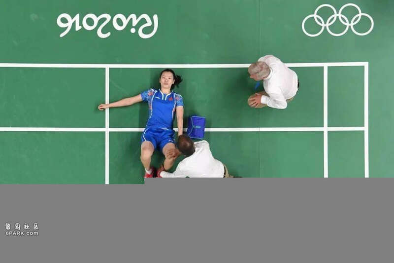

北京时间8月6日，西班牙奥委会官方更新社媒，向中国羽毛球选手何冰娇，就此前举西班牙徽章致敬马林的暖心举动，送上感谢。西班牙奥委会甚至还用中文，对何冰娇说“谢谢你”表达了感动之情。

在此前结束的巴黎奥运会羽毛球女单半决赛中，西班牙名将马林在局分1-0领先，第2局也占据优势的情况下膝盖重伤，最终崩溃痛哭无奈退赛。而何冰娇也在局面不利的情况下，“意外”获得晋级奥运女单决赛的资格。

而在羽毛球女单颁奖礼上，摘得银牌的何冰娇，非常暖心的举着西班牙徽章登上领奖台，并且对着镜头向全世界展示，以此来致敬并且祝愿重伤的马林早日康复。

对此，西班牙媒体和网友十分感动，纷纷盛赞何冰娇此举相当“伟大”。而西班牙奥委会官方也发文向何冰娇表达了感谢之情。西班牙奥委会写道：“与受伤的马林对战的选手何冰娇今天领取了奖牌，并拿着西班牙的徽章向马林致意。非常细心，谢谢你！奥林匹克精神体现得淋漓尽致！”

西班牙体育部也发文向何冰娇表示感谢：“昨天她和马林一起哭了，今天她获得银牌时一直拿着带有西班牙国旗的徽章。向我们的羽毛球明星致敬。何冰娇体现了体育和奥运会的精神。”

而西班牙传奇篮球巨星大加索尔也赞扬何冰娇：“马林受伤后，她的对手何冰娇在领取奖牌时向她致敬，这是一个体现奥林匹克精神的美丽举动。”

可以说，何冰娇因为这一暖心行为，尽管最终未能获得金牌，却已经在外网比奥运冠军更吸粉。
西班牙向奥委会申请：给马林颁铜牌！8年前李雪芮半决赛伤退无牌
北京时间8月6日，西班牙羽毛球协会协主席Andoni Azurmendi确认，他们准备向国际奥委会申请，给此前奥运会女单半决赛伤退的西班牙名将马林，颁发一枚“荣誉铜牌”。西班牙羽毛球协会表示，他们正在进行申请的相关的准备工作。

在此前的巴黎奥运会羽毛球女单半决赛中，西班牙名将马林在与中国选手何冰娇的半决赛中，局分1-0，第2局大比分领先的情况下，膝盖不慎重伤。无法坚持的她，随后含泪伤退。她也就此无缘随后的铜牌赛，印尼新星玛丽斯卡不战而胜，直接获得铜牌，这也是“羽球王国”印尼队本届奥运会唯一的一枚羽毛球奖牌。

而西班牙则因为“唯一希望”马林重伤，在羽毛球项目没有任何奖牌入账。考虑到这极有可能是31岁的马林，生涯最后1届奥运会，西班牙羽协才计划向国际奥委会申请一枚“荣誉铜牌”，以示对她的安慰和嘉奖。

不过目前，国际奥委会并没有相关的先例。8年前的里约奥运会，同样也是在羽毛球女单半决赛，中国选手李雪芮在与马林的比赛中同样重伤。
带伤坚持完赛的她随后无奈退出铜牌赛。李雪芮也在自己最后1届奥运会以伤退并且无奖牌的方式悲情告别。